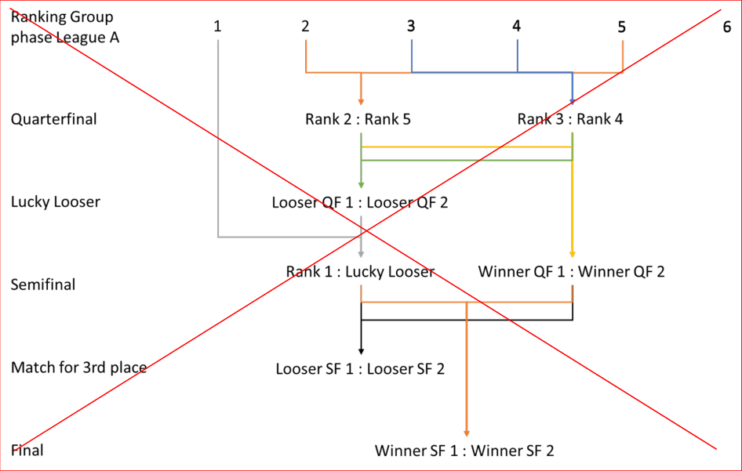

MEMORANDUM 16 June 2025

Regulation amendments applying on 01.07.25
PART 8 INDOOR CYCLING – CYCLE-BALL
Chapter XI WORLD CHAMPIONSHIPS SET UP
8.11.001 Split up of leagues The following split applies to both, Cycle-ball Women and Cycle-ball Men:
| N°Games Qualification | Second Round | Quarter-finals | Lucky Loser | Semi-finals | Match for 9th place | Match for 7th place | Match for 5th Place | Final 4 | Match for 3rd place | Final | Relegation Game | Total | |
|---|---|---|---|---|---|---|---|---|---|---|---|---|---|
| Men Elite League |
|||||||||||||
| 8 Teams | 12 | 2 | 0 | 0 | 0 | 0 | 1 | 1 | 6 | 1 | 1 | 1 | 25 |
| Challenger League |
|||||||||||||
| 3 Teams | 6 | 0 | 0 | 0 | 0 | 0 | 0 | 0 | 0 | 0 | 0 | 6 | |
| 4 Teams | 6 | 0 | 0 | 0 | 2 | 0 | 0 | 0 | 1 | 1 | 0 | 8 | |
| 5 Teams | 10 | 0 | 0 | 0 | 0 | 0 | 0 | 0 | 0 | 0 | 0 | 10 | |
| 6 Teams | 6 | 0 | 2 | 0 | 2 | 0 | 0 | 1 | 1 | 1 | 0 | 13 | |
| 7 Teams | 7 | 1 | 2 | 0 | 2 | 0 | 0 | 1 | 1 | 1 | 0 | 15 | |
| 8 Teams | 12 | 0 | 0 | 0 | 0 | 0 | 1 | 1 | 1 | 1 | 0 | 16 | |
| 9 Teams | 16 | 0 | 0 | 0 | 0 | 0 | 1 | 1 | 1 | 1 | 0 | 20 | |
| 10 Teams | 20 | 0 | 0 | 0 | 0 | 1 | 1 | 1 | 1 | 1 | 0 | 24 | |
| Women Elite League |
|||||||||||||
| 3 Teams | 3 | 0 | 0 | 0 | 1 | 0 | 0 | 0 | 0 | 1 | 0 | 5 | |
| 4 Teams | 6 | 0 | 0 | 0 | 2 | 0 | 0 | 0 | 1 | 1 | 0 | 10 | |
| 5 Teams | 10 | 0 | 0 | 0 | 2 | 0 | 0 | 0 | 1 | 1 | 0 | 14 | |
| 6 Teams | 6 | 2 | 0 | 0 | 0 | 0 | 0 | 1 | 6 | 1 | 1 | 0 | 17 |
| 7 Teams | 9 | 2 | 0 | 0 | 0 | 0 | 0 | 1 | 6 | 1 | 1 | 0 | 20 |
| 8 Teams | 12 | 2 | 0 | 0 | 0 | 0 | 1 | 1 | 6 | 1 | 1 | 1 | 25 |
Allée Ferdi Kübler 12 1860 Aigle Switzerland
T: +41 24 468 58 11
Page 1 / 4
E: admin@uci.ch
Format
Number is based on the result at the UCI Indoor Cycling World Championships the year before
| Group I | Group II |
| 1 | 2 |
| 4 | 3 |
| 6 | 5 |
| 8 | 7 |
| Schedule 1 6 : 2 5 : 3 1 : 4 2 : 5 4 : 6 3 : 7 1 : 8 2 : 9 4 : 10 3 : 11 1 : 12 3 : 13 2A : 14 2B : : 15 4A : 16 L13 17 L15 : 18 1A : 19 W13 : 20 1A 21 1B : 22 1A 23 1B 24 2ndplace F4 : 25 1stplace F4 : |
Schedule 1 6 : 2 5 : 3 1 : 4 2 : 5 4 : 6 3 : 7 1 : 8 2 : 9 4 : 10 3 : 11 1 : 12 3 : 13 2A : 14 2B : : 15 4A : 16 L13 17 L15 : 18 1A : 19 W13 : 20 1A 21 1B : 22 1A 23 1B 24 2ndplace F4 : 25 1stplace F4 : |
Schedule 1 6 : 2 5 : 3 1 : 4 2 : 5 4 : 6 3 : 7 1 : 8 2 : 9 4 : 10 3 : 11 1 : 12 3 : 13 2A : 14 2B : : 15 4A : 16 L13 17 L15 : 18 1A : 19 W13 : 20 1A 21 1B : 22 1A 23 1B 24 2ndplace F4 : 25 1stplace F4 : |
Schedule 1 6 : 2 5 : 3 1 : 4 2 : 5 4 : 6 3 : 7 1 : 8 2 : 9 4 : 10 3 : 11 1 : 12 3 : 13 2A : 14 2B : : 15 4A : 16 L13 17 L15 : 18 1A : 19 W13 : 20 1A 21 1B : 22 1A 23 1B 24 2ndplace F4 : 25 1stplace F4 : |
||
|---|---|---|---|---|---|
| 1 | 6 | : | 8 | Qualification | |
| 2 | 5 | : | 7 | Qualification | |
| 3 | 1 | : | 4 | Qualification | |
| 4 | 2 | : | 3 | Qualification | |
| 5 | 4 | : | 6 | Qualification | |
| 6 | 3 | : | 5 | Qualification | |
| 7 | 1 | : | 8 | Qualification | |
| 8 | 2 | : | 7 | Qualification | |
| 9 | 4 | : | 8 | Qualification | |
| 10 | 3 | : | 7 | Qualification | |
| 11 | 1 | : | 6 | Qualification | |
| 12 | 3 | : | 7 | Qualification | |
| 13 | 2A | : | 3B | 2ndRound | |
| 14 | 2B | : | 3A | 2ndRound | |
| : | |||||
| 15 | 4A | : | 4B | Place 7/8 | |
| 16 | L13 | L14 | Place 5/6 | ||
| 17 | L15 | : | Winner Challenger League | Relegation | |
| 18 | 1A | : | 1B | Final 4 | |
| 19 | W13 | : | W14 | Final 4 | |
| 20 | 1A | W14 | Final 4 | ||
| 21 | 1B | : | W13 | Final 4 | |
| 22 | 1A | W13 | Final 4 | ||
| 23 | 1B | W14 | Final 4 | ||
| 24 | 2ndplace F4 | : | 3rdplace F4 | Bronze/Silver Game | |
| 25 | 1stplace F4 | : | W24 | Gold Game |
Allée Ferdi Kübler 12 T: +41 24 468 58 11 1860 Aigle E: admin@uci.ch Switzerland
Page 2 / 4
| ~~N° teams TOTAL~~ | ~~4~~ | ~~5~~ | ~~10~~ | ~~10~~ | ~~11~~ | ~~12~~ | ~~13~~ | ~~14~~ | ~~15~~ | ~~16~~ | ~~17~~ | ~~18~~ | ~~19~~ | ~~20~~ | ~~21~~ | |
|---|---|---|---|---|---|---|---|---|---|---|---|---|---|---|---|---|
| ~~N° teams League~~ ~~A~~ |
~~4~~ | ~~5~~ | ~~6~~ | ~~6~~ | ~~6~~ | ~~6~~ | ~~6~~ | ~~6~~ | ~~6~~ | ~~6~~ | ~~6~~ | ~~6~~ | ~~6~~ | ~~6~~ | ~~6~~ | |
| ~~N° games Group~~ ~~phase~~ |
~~6~~ | ~~10~~ | ~~15~~ | ~~15~~ | ~~15~~ | ~~15~~ | ~~15~~ | ~~15~~ | ~~15~~ | ~~15~~ | ~~15~~ | ~~15~~ | ~~15~~ | ~~15~~ | ~~15~~ | |
| ~~Quarterfinal~~ | ~~2~~ | ~~2~~ | ~~2~~ | ~~2~~ | ~~2~~ | ~~2~~ | ~~2~~ | ~~2~~ | ~~2~~ | ~~2~~ | ~~2~~ | ~~2~~ | ~~2~~ | ~~2~~ | ||
| ~~Lucky Loser~~ | ~~1~~ | ~~1~~ | ~~1~~ | ~~1~~ | ~~1~~ | ~~1~~ | ~~1~~ | ~~1~~ | ~~1~~ | ~~1~~ | ~~1~~ | ~~1~~ | ~~1~~ | ~~1~~ | ||
| ~~Semifinal~~ | ~~2~~ | ~~2~~ | ~~2~~ | ~~2~~ | ~~2~~ | ~~2~~ | ~~2~~ | ~~2~~ | ~~2~~ | ~~2~~ | ~~2~~ | ~~2~~ | ~~2~~ | ~~2~~ | ~~2~~ | |
| ~~Match for 3rdplace~~ | ~~1~~ | ~~1~~ | ~~1~~ | ~~1~~ | ~~1~~ | ~~1~~ | ~~1~~ | ~~1~~ | ~~1~~ | ~~1~~ | ~~1~~ | ~~1~~ | ~~1~~ | ~~1~~ | ~~1~~ | |
| ~~Final~~ | ~~1~~ | ~~1~~ | ~~1~~ | ~~1~~ | ~~1~~ | ~~1~~ | ~~1~~ | ~~1~~ | ~~1~~ | ~~1~~ | ~~1~~ | ~~1~~ | ~~1~~ | ~~1~~ | ~~1~~ | |
| ~~N° teams League~~ ~~B~~ |
~~4~~ | ~~5~~ | ~~6~~ | ~~7~~ | ~~4~~ | ~~5~~ | ~~5~~ | ~~6~~ | ~~6~~ | ~~5~~ | ~~6~~ | ~~5~~ | ||||
| ~~N° games Group~~ ~~phase~~ |
~~6~~ | ~~10~~ | ~~15~~ | ~~21~~ | ~~6~~ | ~~10~~ | ~~10~~ | ~~15~~ | ~~15~~ | ~~10~~ | ~~15~~ | ~~10~~ | ||||
| ~~Relegation~~ | ~~1~~ | ~~1~~ | ~~1~~ | ~~1~~ | ~~1~~ | ~~1~~ | ~~1~~ | ~~1~~ | ~~1~~ | ~~1~~ | ~~1~~ | ~~1~~ | ||||
| ~~N° teams League~~ ~~C~~ |
~~4~~ | ~~4~~ | ~~5~~ | ~~5~~ | ~~6~~ | ~~4~~ | ~~4~~ | ~~5~~ | ||||||||
| ~~N° games Group~~ ~~phase~~ |
~~6~~ | ~~6~~ | ~~10~~ | ~~10~~ | ~~15~~ | ~~6~~ | ~~6~~ | ~~10~~ | ||||||||
| ~~Relegation~~ | ~~1~~ | ~~1~~ | ~~1~~ | ~~1~~ | ~~1~~ | ~~1~~ | ~~1~~ | ~~1~~ | ||||||||
| ~~N° teams League~~ ~~D~~ |
~~4~~ | ~~4~~ | ~~5~~ | |||||||||||||
| ~~N° games Group~~ ~~phase~~ |
~~6~~ | ~~6~~ | ~~10~~ | |||||||||||||
| ~~Relegation~~ | ~~1~~ | ~~1~~ | ~~1~~ | |||||||||||||
| ~~N°games TOTAL~~ | ~~10~~ | ~~17~~ | ~~22~~ | ~~29~~ | ~~33~~ | ~~38~~ | ~~44~~ | ~~36~~ | ~~40~~ | ~~44~~ | ~~49~~ | ~~54~~ | ~~47~~ | ~~52~~ | ~~55~~ |
(article introduced on 01.01.13; text modified on 01.01.24; 01.07.25)
Allée Ferdi Kübler 12 1860 Aigle Switzerland
T: +41 24 468 58 11 E: admin@uci.ch
Page 3 / 4
8.11.002 World Championships mode

If a match ends in a draw in the rounds from the quarterfinals to the semifinals, a penalty shoot-out will decide the match.
If the match for 3rd place or the final ends in a draw, extra time will be played, followed by a penalty shoot-out if the match is still tied after extra time.
(text modified on 01.01.24; 01.07.25)
Allée Ferdi Kübler 12 1860 Aigle Switzerland
T: +41 24 468 58 11 E: admin@uci.ch
Page 4 / 4